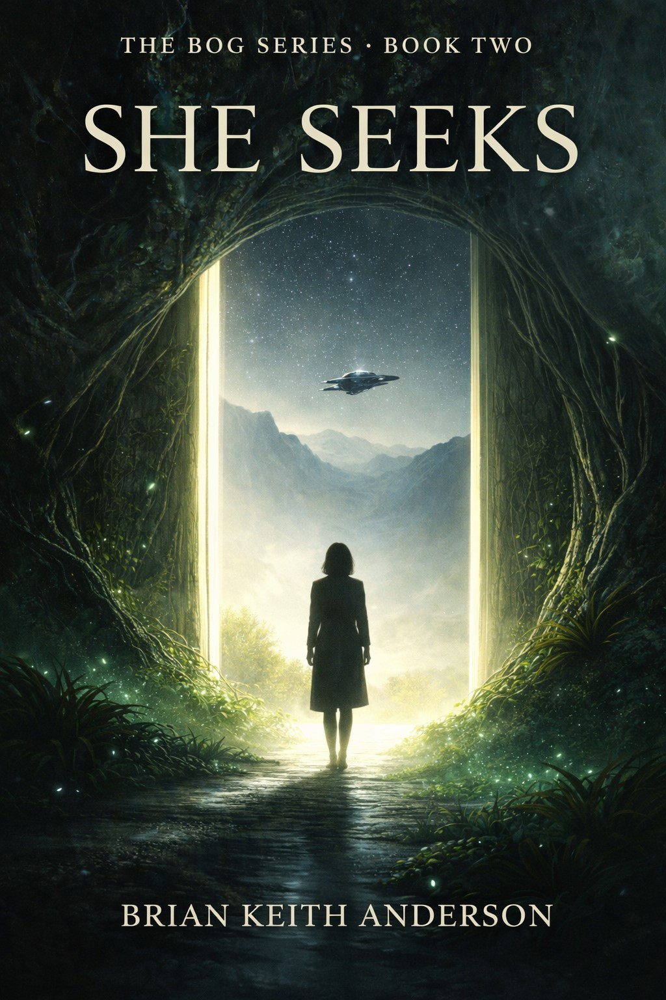

About This Book
She Seeks continues The Bog Series as Saxifraga moves deeper into a world that is beginning to answer. What first stirred now begins to call, and the pathways between memory, place, and living resonance grow stronger.
The Bog Series — Book Two

She Seeks continues The Bog Series as Saxifraga moves deeper into a world that is beginning to answer. What first stirred now begins to call, and the pathways between memory, place, and living resonance grow stronger.